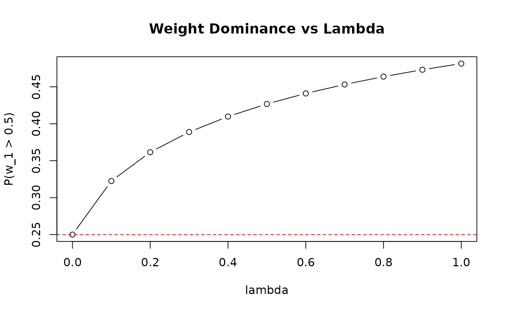

Explores the trade-off between K_J fit and first-weight constraint over lambda values.
Arguments
- J
Integer; sample size.
- K_target
List with
mu_Kandvar_K.- w1_target
Weight target specification.
- lambda_seq
Numeric vector of lambda values.
- max_iter
Integer; max iterations per optimization.
- M
Integer; quadrature nodes.
- verbose
Logical; print progress.
- loss_type
Character; "relative", "adaptive", or "absolute".
Examples
curve <- compute_tradeoff_curve(
J = 50,
K_target = list(mu_K = 5, var_K = 8),
w1_target = list(prob = list(threshold = 0.5, value = 0.25)),
lambda_seq = seq(0, 1, by = 0.1),
loss_type = "relative"
)
# Visualize trade-off
plot(curve$lambda, curve$w1_prob_gt_50, type = "b",
xlab = "lambda", ylab = "P(w_1 > 0.5)",
main = "Weight Dominance vs Lambda")
abline(h = 0.25, lty = 2, col = "red") # target
